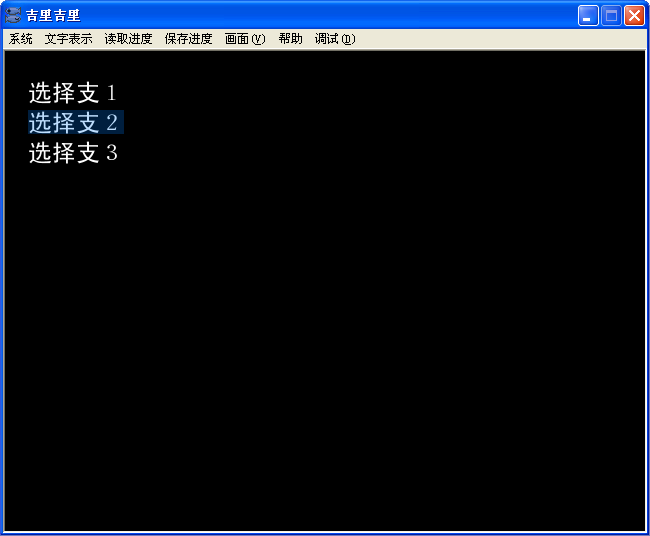

KAG 中，选择支的感觉接近“超级链接”。
要定义一个选项，需要用到
link 和
endlink 这样的指令。这两个指令中间夹着的文字，可以用鼠标或者键盘进行选择。单击鼠标、或者按下键盘的 Enter 键，将会跳转到对应选项 link 指令 target 属性指向的标签，继续执行。
还有，等待玩家选择，剧本段的末尾停止执行的时候，需要使用
[s] 指令。点下窗口菜单上的「前进到下一选择支」后，将会快进到下一个
[s] 为止。
使用这些指令，就可以像下面的例子那样制作选择支了。target= 的后面 * (星号) 是必要的。还有，对应的标签的| (竖线) 以后的文字，在指定 target 属性时没有必要写上。
[wait time=200]
*start|开始
[cm]
[link target=*select1]选择支１[endlink][r]
[link target=*select2]选择支２[endlink][r]
[link target=*select3]选择支３[endlink][r]
[s]
*select1
你选择了选择支１。[l]
[s]
*select2
你选择了选择支２。[l]
[s]
*select3
你选择了选择支３。[l]
[s]
像上面这样实行的话，即使进行选择以后，选项也不会消失。
想要让选项在选择后消失的话，通常在跳转到的标签之后，使用 [cm] 指令。
[wait time=200]
*start|スタート
[cm]
[link target=*select1]选择支１[endlink][r]
[link target=*select2]选择支２[endlink][r]
[link target=*select3]选择支３[endlink][r]
[s]
*select1
[cm]
你选择了选择支１。。[l]
[s]
*select2
[cm]
你选择了选择支２。。[l]
[s]
*select3
[cm]
你选择了选择支３。。[l]
[s]

选择支范例
Note
选择支一旦被选择后，在新的选择支被定义前，或者使用
unlocklink 指令前，将无法再次选择。
还有，要想使当前画面上的可用选择支无效化的话，使用
locklink 指令。
一般的情况下不用在意这些啦。